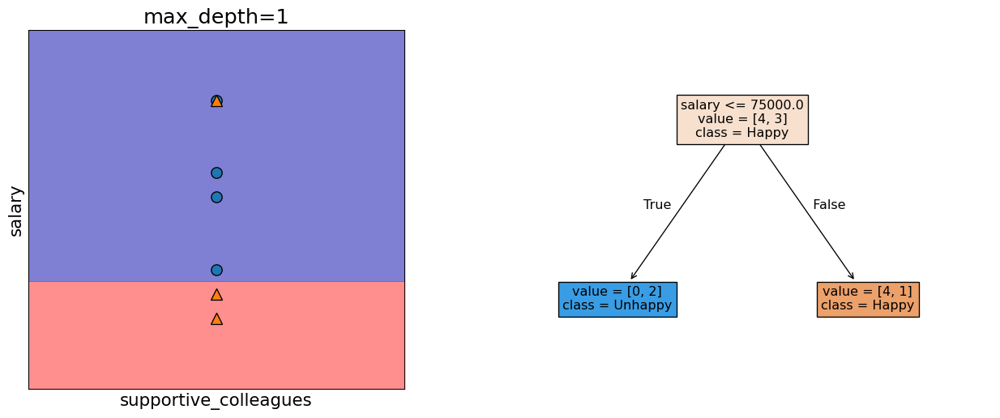
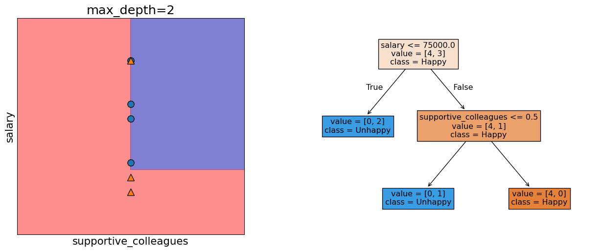

Lecture 2: Terminology, Baselines, Decision Trees
Firas Moosvi (Slides adapted from Varada Kolhatkar)
Announcements
- Things due this week
- Homework 1 (hw1): Due Jan 12 , 11:59 pm
- There are some assert statements in the notebook you can use to check your work! If they fail, you didn’t get the exercise correct
- You can find the tentative due dates for all deliverables here.
- Please monitor Ed Discussion (especially pinned posts and instructor posts) for announcements.
- I’ll assume that you’ve watched the pre-lecture videos.
Participation marks (5%) in Section 202
In this section (202) we will not be using iClickers for “attendance”
Instead, you will have weekly “Learning Logs” where you will reflect on the material covered for the week
The first Learning Log will be released tonight, and will be due Sunday Jan 11, 11:59 PM
Only students registered in section 202 will see these on PrairieLearn
Gradescope
Make sure you can submit your assignment before the hw1 due date!
It is required for you to work in a GitHub repository, please maintain your GitHub repo up-to-date.
Some students are having trouble getting registered on Gradescope, we’re working on a fix - come see me in the break or after class!
Checklist for you in the first week
Suggested Workflow for working with Jupyter Notebooks
- Create a folder on your computer that will have all the CPSC 330 repos:
~/School/Year3/CPSC330/<– Consider this your CPSC parent folder
- Create subfolders for:
hw,class,practice - In the
hwfolder, you will then clonehw1,hw2,hw3, etc… - In the
classfolder, you will clone thecpsc330-2025W2repo which contains all the class jupyter notebooks- Do not make any changes to files in this directory/repo, you will have trouble when you pull stuff during each class.
- If you did make changes, you can reset to the last commit and DESTROY any changes you made (be careful with this command) using:
git reset --hard
- In the
practicefolder, you can copy any notebooks (.ipynb) and files (like data/*.csv) you want to try running locally and experiment
üéØ Learning Outcomes
By the end of this lesson, you will be able to:
Define key machine learning terminology:
features, targets, predictions, training, error, classification vs. regression, supervised vs. unsupervised learning, hyperparameters vs. parameters, baselines, decision boundariesBuild a simple machine learning model in scikit-learn, explaining the
fit–predictworkflow and evaluating performance with thescoremethodDescribe at a high level how decision trees are trained (fitting) and how they make predictions
Implement and visualize decision trees in scikit-learn using
DecisionTreeClassifierandDecisionTreeRegressor
Recap: What is ML?
- ML uses data to build models that find patterns, make predictions, or generate content.
- It helps computers learn from data to make decisions.
- No one model works for every situation.
Class Participation using Agora
- Visit: https://agora.students.cs.ubc.ca
- Login with your UBC CWL
- Use enrol code: agentic

Clicker 2.1: ML or not
Select all of the following statements which are suitable problems for machine learning.
- Identifying objects within digital images, such as facial recognition in security systems or categorizing images based on content.
- Determining if individuals meet the necessary criteria for government or financial services based on strict guidelines.
- Identifying unusual patterns that may indicate fraudulent transactions in banking and finance.
- Automatically analyzing images from MRIs, CT scans, or X-rays to detect abnormalities like tumors or fractures.
- Addressing mental health issues where human empathy, understanding, and adaptability are key.
Therapists using ChatGPT secretly üòî

Recap: When is ML suitable?
- ML excels when the problem involve identifying complex patterns or relationships in large datasets that are difficult for humans to discern manually.
- Rule-based systems are suitable where clear and deterministic rules can be defined. Good for structured decision making.
- Human experts are good with problems which require deep contextual understanding, ethical judgment, creative input, or emotional intelligence.
Recap: Supervised learning
- We wish to find a model function \(f\) that relates \(X\) to \(y\).
- We use the model function to predict targets of new examples.

In the first part of this course, we’ll focus on supervised machine learning.
Unsupervised learning
- Training data consists of observations \(X\) without any corresponding targets.
- Unsupervised learning could be used to group similar things together in \(X\) or to find underlying structure in the data.

Clicker 2.2: Supervised vs unsupervised
Participate using Agora (code: agentic)
Select all of the following statements which are examples of supervised machine learning
- Finding groups of similar properties in a real estate data set.
- Predicting whether someone will have a heart attack or not on the basis of demographic, diet, and clinical measurement.
- Grouping articles on different topics from different news sources (something like the Google News app).
- Detecting credit card fraud based on examples of fraudulent and non-fraudulent transactions.
- Given some measure of employee performance, identify the key factors which are likely to influence their performance.
Clicker 2.3: Classification vs. Regression
Participate using Agora (code: agentic)
Select all of the following statements which are examples of regression problems
- Predicting the price of a house based on features such as number of bedrooms and the year built.
- Predicting if a house will sell or not based on features like the price of the house, number of rooms, etc.
- Predicting percentage grade in CPSC 330 based on past grades.
- Predicting whether you should bicycle tomorrow or not based on the weather forecast.
- Predicting appropriate thermostat temperature based on the wind speed and the number of people in a room.
Today’s focus
- ML Terminology
- Using sklearn to build a simple supervised ML model
- Intuition of Decision Trees
Framework
- There are many frameworks to do do machine learning.
- We’ll mainly be using
scikit-learnframework.
Running example
Imagine you’re in the fortunate situation where, after graduating, you have a few job offers and need to decide which one to choose. You want to pick the job that will likely make you the happiest. To help with your decision, you collect data from like-minded people.
- Can you think of relevant features for this problem?
Toy job happinees dataset
Here are the first few rows of a toy dataset.
Terminology
Features, target, example
- What are the features \(X\)?
- features = inputs = predictors = explanatory variables = regressors = independent variables = covariates
- What’s the target \(y\)?
- target = output = outcome = response variable = dependent variable = labels
- What is an example?
| supportive_colleagues | salary | free_coffee | boss_vegan | happy? | |
|---|---|---|---|---|---|
| 0 | 0 | 70000 | 0 | 1 | Unhappy |
| 1 | 1 | 60000 | 0 | 0 | Unhappy |
| 2 | 1 | 80000 | 1 | 0 | Happy |
| 3 | 1 | 110000 | 0 | 1 | Happy |
| 4 | 1 | 120000 | 1 | 0 | Happy |
| 5 | 1 | 150000 | 1 | 1 | Happy |
| 6 | 0 | 150000 | 1 | 0 | Unhappy |
Classification vs. Regression
- Is this a classification problem or a regression problem?
| supportive_colleagues | salary | free_coffee | boss_vegan | happy? | |
|---|---|---|---|---|---|
| 0 | 0 | 70000 | 0 | 1 | Unhappy |
| 1 | 1 | 60000 | 0 | 0 | Unhappy |
| 2 | 1 | 80000 | 1 | 0 | Happy |
| 3 | 1 | 110000 | 0 | 1 | Happy |
| 4 | 1 | 120000 | 1 | 0 | Happy |
| 5 | 1 | 150000 | 1 | 1 | Happy |
| 6 | 0 | 150000 | 1 | 0 | Unhappy |
(Optional) Inference vs. Prediction
- Inference asks: Why does something happen?
- Goal: understand and quantify the relationship between variables
- Often involves estimating model parameters and testing hypotheses
- Example: Which factors influence happiness, and by how much?
- Prediction asks: What will happen?
- Goal: accurately predict the target without needing to fully explain the relationships
- Example: Will you be happy in a particular job?
Of course these goals are related, and in many situations we need both.
Training
- In supervised ML, the goal is to learn a function that maps input features (\(X\)) to a target (\(y\)).
- The relationship between \(X\) and \(y\) is often complex, making it difficult to define mathematically.
- We use algorithms to approximate this complex relationship between \(X\) and \(y\).
- Training is the process of applying an algorithm to learn the best function (or model) that maps \(X\) to \(y\).
- In this course, I’ll help you develop an intuition for how these models work and demonstrate how to use them in a machine learning pipeline.
Error and accuracy
- Machine learning models are not perfect—they will make mistakes.
- To judge whether a model is useful, we need to track its performance.
- For classification problems, the most common (and default in
sklearn) metric is accuracy:
\[ \text{Accuracy} = \frac{\text{Number of correct predictions}}{\text{Total number of examples}} \]
Separating \(X\) and \(y\)
- In order to train a model we need to separate \(X\) and \(y\) from the dataframe.
Baseline
- Let’s try a simplest algorithm of predicting the most popular target!
from sklearn.dummy import DummyClassifier
model = DummyClassifier(strategy="most_frequent") # Initialize the DummyClassifier to always predict the most frequent class
model.fit(X, y) # Train the model on the feature set X and target variable y
toy_happiness_df['dummy_predictions'] = model.predict(X) # Add the predicted values as a new column in the dataframe
toy_happiness_df| supportive_colleagues | salary | free_coffee | boss_vegan | happy? | dummy_predictions | |
|---|---|---|---|---|---|---|
| 0 | 0 | 70000 | 0 | 1 | Unhappy | Happy |
| 1 | 1 | 60000 | 0 | 0 | Unhappy | Happy |
| 2 | 1 | 80000 | 1 | 0 | Happy | Happy |
| 3 | 1 | 110000 | 0 | 1 | Happy | Happy |
| 4 | 1 | 120000 | 1 | 0 | Happy | Happy |
| 5 | 1 | 150000 | 1 | 1 | Happy | Happy |
| 6 | 0 | 150000 | 1 | 0 | Unhappy | Happy |
Decision trees intuition
- One intuitive way to build a model is by asking a series of yes/no questions, forming a tree.
- Which question would help you best separate the happy and unhappy examples?

| supportive_colleagues | salary | free_coffee | boss_vegan | happy? | |
|---|---|---|---|---|---|
| 0 | 0 | 70000 | 0 | 1 | Unhappy |
| 1 | 1 | 60000 | 0 | 0 | Unhappy |
| 2 | 1 | 80000 | 1 | 0 | Happy |
| 3 | 1 | 110000 | 0 | 1 | Happy |
| 4 | 1 | 120000 | 1 | 0 | Happy |
| 5 | 1 | 150000 | 1 | 1 | Happy |
| 6 | 0 | 150000 | 1 | 0 | Unhappy |
Which question is more effective?

What are we trying to learn?
- We want to learn which questions to ask and in what order.
- How many possible questions could we ask with these features?
| supportive_colleagues | salary | free_coffee | boss_vegan | happy? | |
|---|---|---|---|---|---|
| 0 | 0 | 70000 | 0 | 1 | Unhappy |
| 1 | 1 | 60000 | 0 | 0 | Unhappy |
| 2 | 1 | 80000 | 1 | 0 | Happy |
| 3 | 1 | 110000 | 0 | 1 | Happy |
| 4 | 1 | 120000 | 1 | 0 | Happy |
| 5 | 1 | 150000 | 1 | 1 | Happy |
| 6 | 0 | 150000 | 1 | 0 | Unhappy |
Decision tree Training (high level)
- Training a decision tree is a search process: we look for the “best” tree among many possible ones.
- There are different algorithms for learning trees. Check this out.
- At each step, we evaluate candidate questions using measures such as:
- Information gain
- Gini index
- The goal is to split the data into groups with greater certainty (more homogeneous outcomes).
Decision tree with sklearn
Let’s train a simple decision tree on our toy dataset using sklearn
from sklearn.tree import DecisionTreeClassifier # import the classifier
from sklearn.tree import plot_tree
model = DecisionTreeClassifier(max_depth=2, random_state=1) # Create a class object
model.fit(X, y)
plot_tree(model, filled=True, feature_names = X.columns, class_names=["Happy", "Unhappy"], impurity = False, fontsize=12);
Prediction
- Given a new example, how does a decision tree predict the class of this example?
- What would be the prediction for the example below using the tree above?
- supportive_colleagues = 1, salary = 60000, coffee_machine = 0, vegan_boss = 1,

Prediction with sklearn
- What would be the prediction for the example below using the tree above?
- supportive_colleagues = 1, salary = 60000, free_coffee = 0, vegan_boss = 1,

Parameters vs. Hyperparameters
- Parameters
- The questions (features and thresholds) used to split the data at each node.
- Example: salary <= 75000 at the root node
- Hyperparameters
- Settings that control tree growth, like
max_depth, which limits how deep the tree can go.
- Settings that control tree growth, like
Decision boundary
- A decision boundary is the line, curve, or surface that separates classes.
- Points on one side \(\rightarrow\) Model predicts Class Happy
- Points on the other side \(\rightarrow\) Model predicts Class Unhappy
Decision boundary with max_depth=1

Decision boundary with max_depth=2

Clicker 2.4: Baselines and Decision trees
iParticipate using Agora (code: agentic) https://join.iclicker.com/FZMQ
Select all of the following statements which are TRUE.
- Change in features (i.e., binarizing features above) would change DummyClassifier predictions.
- predict takes only X as argument whereas fit and score take both X and y as arguments.
- For the decision tree algorithm to work, the feature values must be binary.
- The prediction in a decision tree works by routing the example from the root to the leaf.
Summary
- Terminology
sklearnbasic steps- Decision tree intuition
Break
Let’s take a break!

Group Work: Class Demo & Live Coding
In some of the classes, we will do a bit of live coding to get your used to practical machine learning. You are highly encouraged to follow along - we won’t usually finish everything in the demo, but it should be a significant portion that you can finish off after class.
For this demo, each student should click this link to create a new repo in their accounts, then clone that repo locally to follow along with the demo from today.